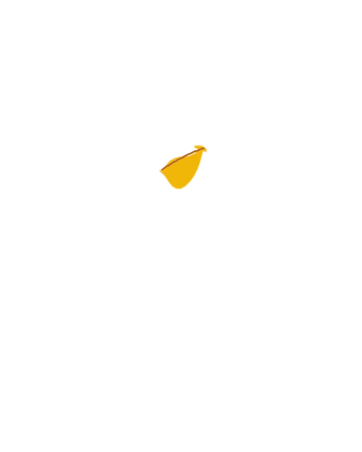
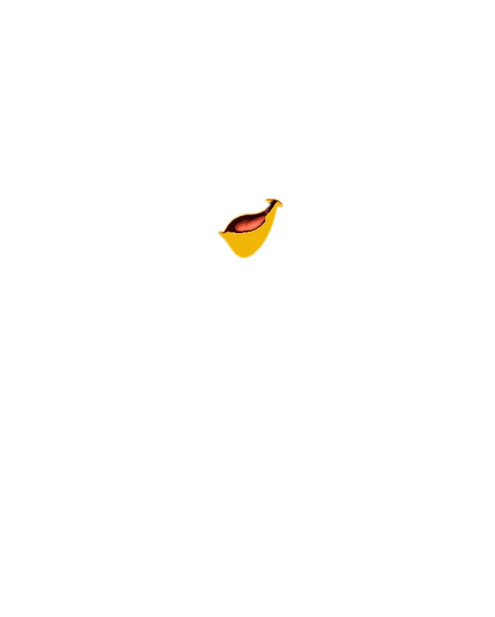
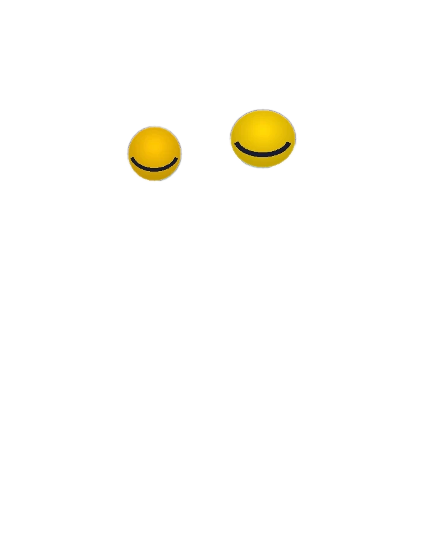

Conoce a Monty, el búho del Colegio María Montessori
Pregúntale por voz o por escrito: niveles, el método Montessori y cómo agendar tu visita, a cualquier hora.
De maternal a secundaria

 Demo preparado por MOON Digital
Demo preparado por MOON DigitalMonty · Colegio María Montessori● En línea



Conectando…
Monty es el asistente virtual del colegio. Admisiones confirma colegiaturas, fechas y requisitos.